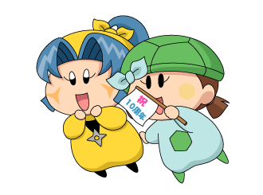
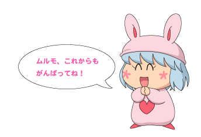

２０１４年の１月４日、ムルモ屋本舗はなんとなんと「開設１０周年」を迎えました。
それを記念して、皆さんとある企画を行いました。
その名も『色紙企画』！
１枚の色紙を皆さんで持ち回り、メッセージや絵を書きこむという、「合作」な企画となります。こちらの内容をもとに、２０１３年の１１月から企画を開始、総勢１６名の方にご参加いただきました。
そして色紙は５月に見事完成！ 案内のページにもあるように、郵送で色紙を送り合うのはなかなか大変でした。でも大変だったからこそ、すごく豪華な色紙が出来上がりました！
それでは完成した２枚の色紙を公開させていただきますね。公開が大変遅れてしまい、申し訳ございませんm(_ _)m。
まずは１枚目です。

左上から、
緋龍さん MC119さん 梨璃さん
メグモさん blueさん
夏田みかんさん 葉月さん かがわさん
となります。（色紙をクリックすると大きなサイズで表示します。）
皆さんの気合いの入ったイラストとメッセージをいただけて私は幸せ者です！

続いて２枚目です。

左上から、
浅見さん みかさん はくたかさん
雛乃うたさん ミクさん しゃきさん
multalさん 尾砂かなさん
となります。（色紙をクリックすると大きなサイズで表示します。）
すごくにぎやかな色紙が出来上がり、何度見ても楽しい気分になりますね。
サイト開設から１０年という長い月日が過ぎましたが、これからも皆さんと一緒にミルモ活動を続けていきたいと考えております。これまで行ったことのないファン活動にもチャレンジしていきたいですね。（アナログもいいなぁと再認識できたので、いよいよ同人誌企画も…！？）
これからもマイペースにサイトは続けていきますので、どうぞこれからもよろしくお願いいたします！

(2014/6/28)